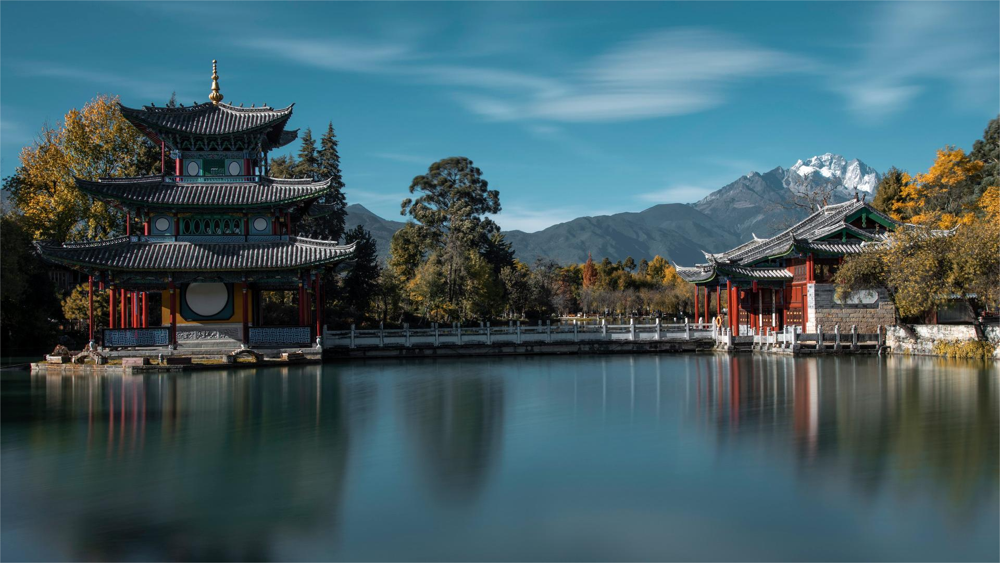

云南大学
黑龙潭公园的夏日风景却总有几分让人充满期待的因素，每年夏天，在公园主道上的仲夏花园里，种植花儿的品种会有不同，花园里每年呈现的景致也会不同。
黑龙潭公园的夏日风景却总有几分让人充满期待的因素，每年夏天，在公园主道上的仲夏花园里，种植花儿的品种会有不同，花园里每年呈现的景致也会不同。马鞭草、百日菊、毛地黄、非洲菊……每一种花花草草，都能带来一份专属于它们的夏花灿烂。
6月已是艳丽迷人的仲夏花园里，现在还是一片绿色的模样。仲夏花园里的主角儿是百日菊，那是一种鲜艳、热烈的花儿。红色、粉色、黄色……花色多、花期长、花形美的百日菊，盛放时节、很是艳丽，连成一片的花园景致一定是很迷人的在绿叶满枝的百日菊花田中，穿插种植着一些草本花卉，品种繁多、色彩各异，白晶菊、蓝蓟、虞美人、朱唇、月见草等等……像是在一个居家的花园里，主人随意播撒了一把花籽，并未进行刻意的修剪，由着花儿肆意生长、自然开放，如野花一般的风格、令人喜爱。光是非洲菊，这里就有好几个花色，黄色的、白色的、粉色的……开得很盛，有几棵红色的虞美人点缀其中，随风轻舞、摇曳生姿……色彩缤纷的各色花儿，随意自然，却又美艳迷人。
云南大学地球科学学院@2021~2022